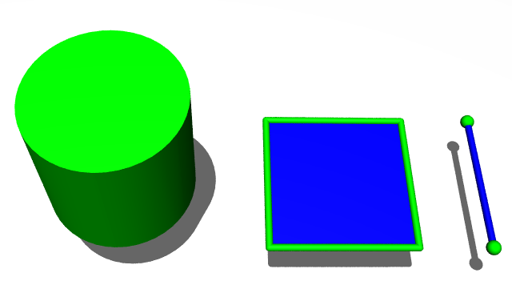
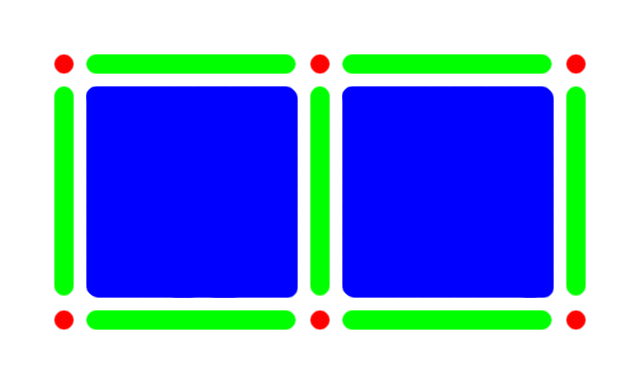
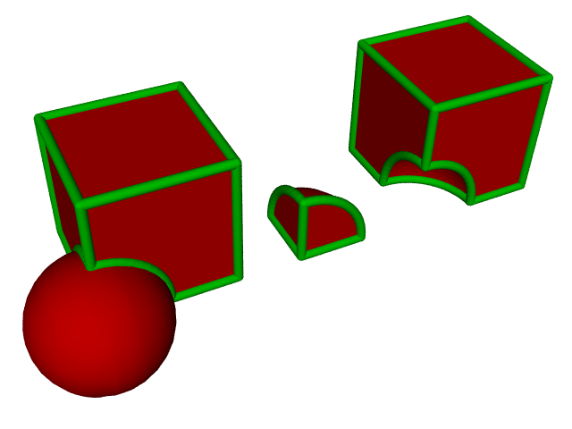

Solid Modeling
At the core of most Computer-Aided Design (CAD) software tools is a solid modeling system that uses a Boundary Representation (B-rep or BREP). The characteristics of complex objects, such as an airplane, can be assessed prior to manufacture because of their representation as a solid model. Most Computer-Aided Engineering (CAE) analysis tools have yet to embrace true solid modeling – for the pioneering few, such as Caedium, benefits abound.
Boundary Representation
The B-rep is the basis of all solid modeling systems. In a B-rep, the boundaries (e.g., faces in the case of a cylinder) delineate the inside (solid) and outside of a continuum. With a B-rep description of a volume it is relatively easy for software tools to determine the volume's properties. The B-rep can also apply to 2D (faces) and 1D (edges) objects.
Continuum-Boundary Relationships: Green = Boundary, Blue = Continuum
Topology
A natural hierarchy (or topology) exists within a B-rep, whereby a 3D continuum object (volume) is bounded by 2D boundary objects (faces) and a 2D continuum object (face) is bounded by 1D boundary objects (edges) and so on.
Topology of 2 Faces Sharing a Common Edge
Geometry Construction
Using a B-rep during geometry construction allows a natural extension of edges (1D) to faces (2D) and faces (2D) to volumes (3D) using operations such as extrude, revolve and sweep. Also, defining chamfers and fillets on a B-rep volume is straightforward; there is no ambiguity (as there is in a surface-based representation) about which side of a surface is solid and therefore whether to add or remove material to satisfy the chamfer or fillet.
Constructive Solid Geometry
Constructive Solid Geometry (CSG) is a powerful technique for creating geometry using Boolean operators to unite, intersect and subtract B-rep solids. Typically, simple primitive solids, such as cylinders, spheres and boxes, are combined to form complex solids. Throughout the process of applying Boolean operators, a valid B-rep is maintained.
Boolean Operations: Left to right: unite, intersect and subtract, for a box and sphere
Simulation
CAE analysis tools, such as Computational Fluid Dynamics (CFD), require topologically complete models (i.e., faces are connected to adjacent faces to form a volume) to produce a mesh on which to solve fluid flow equations. Boundary conditions, such as walls, inlets and outlets, are specified on the boundary faces. A B-rep solid model is an ideal basis for performing such simulations, as it supplies the necessary topology to define the fluid flow domain and the geometric definition required to perform meshing.
Ironically, most CAE analysis tools are not based on solid modeling systems and instead use ad-hoc, incomplete geometry definitions tailored for specific simulation techniques. Typically the meshing of the geometry is performed in a separate pre-processor, separating the simulation engine (solver) from the geometry model. Thus, geometry modifications require a tedious revisit to the pre-processor for re-meshing and sometimes the whole simulation then needs to be reconfigured.
The latest CAE analysis tools are based on solid modeling systems and provide a more streamlined simulation process whereby geometry modifications are immediately and automatically captured in the simulation.
Caedium
The Caedium unified simulation environment is based on the Open Cascade solid modeling system that, when combined with our Builder add-on, can create B-rep solid models ready for immediate simulation using our Panel Flow add-on. Our Professional add-on incorporates both add-ons.
Feedback
Questions? Ideas? Problems?